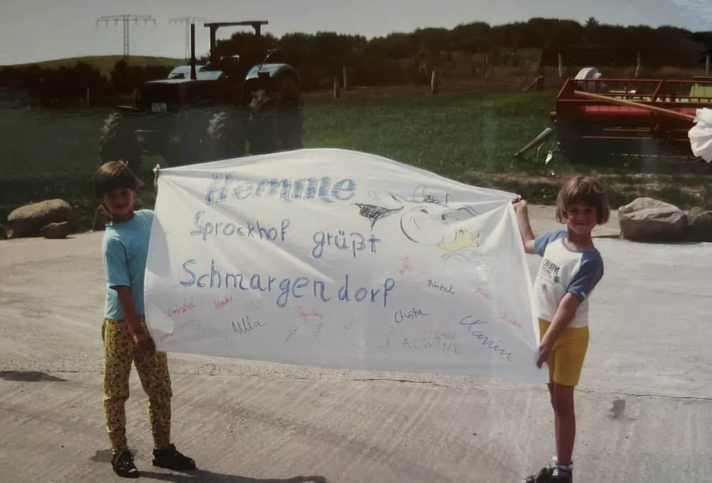
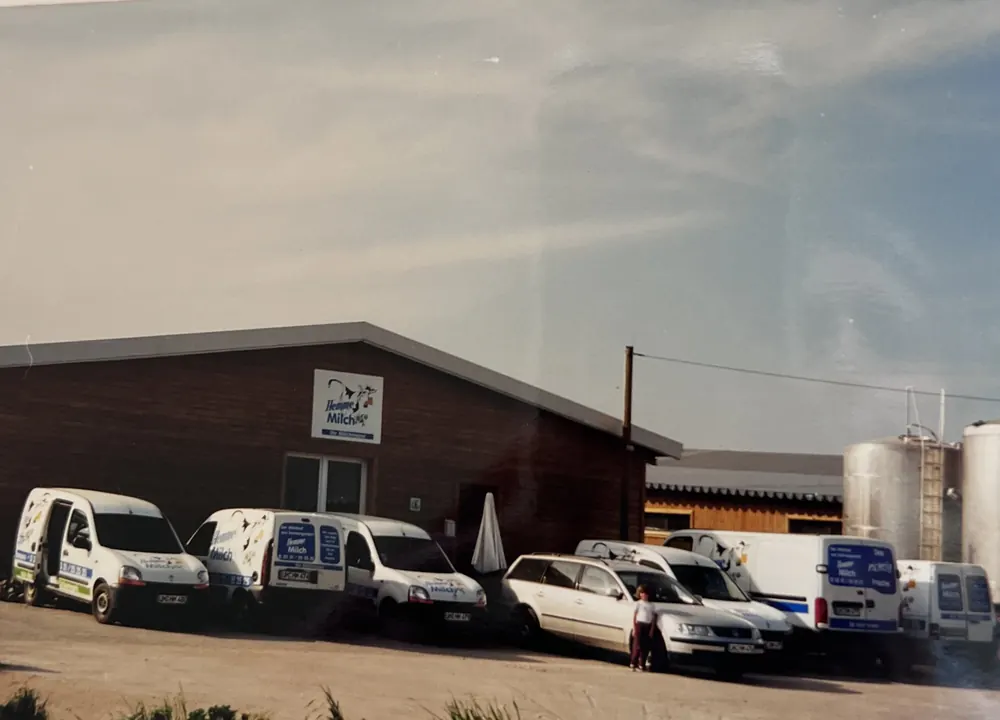
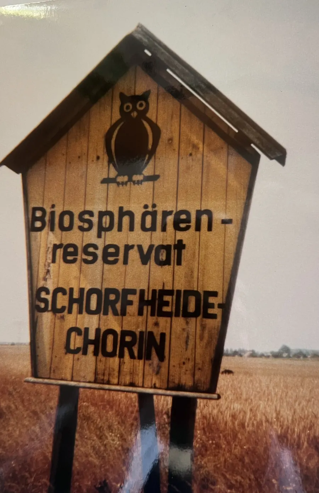
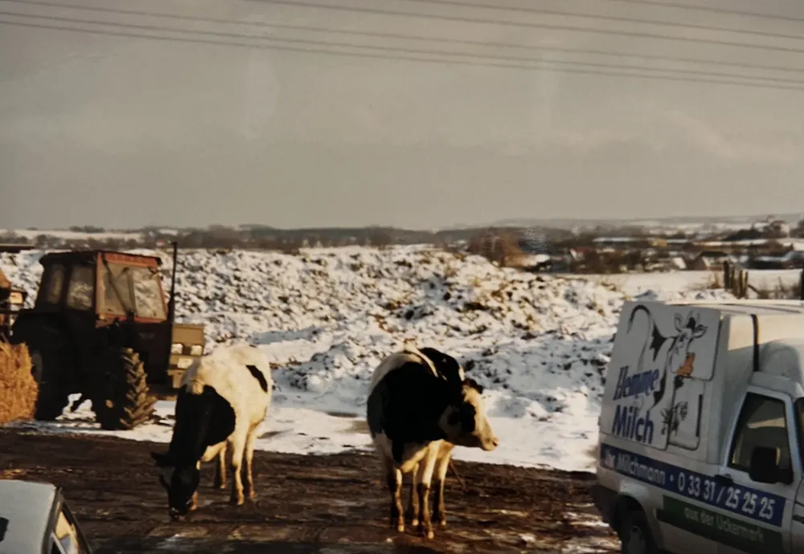
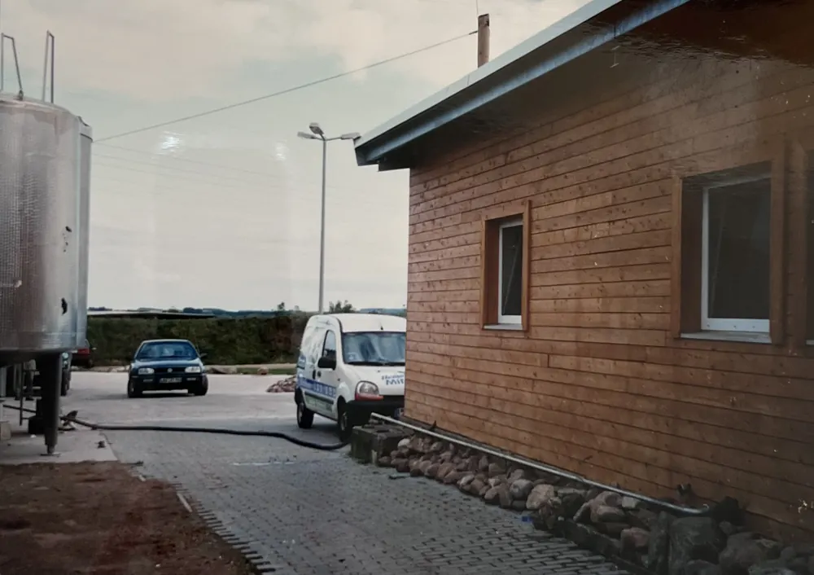

- Startseite
- Über uns
Landwirtschaft seit 1589
Eure Familie Hemme
Hinter Hemme Milch steht eine Familie mit Landwirtschaft seit 1589 und ein Team, das jeden Tag sein Bestes gibt.



Auf einen Blick
Hemme Milch ist ein Familienunternehmen. Die Familie Hemme betreibt seit 1589 Landwirtschaft am Sprockhof in der Wedemark. 1998 gründete Gunnar Hemme in Schmargendorf in der Uckermark die eigene Hofmolkerei. Heute führen er und Ilsabe Hemme den Betrieb mit rund 50 Mitarbeitenden.
- Landwirtschaft der Familie am Sprockhof
- 1589
- erste Milch aus Schmargendorf
- 17.11.1998
- Geschäftsführende aus der Familie
- 2
- Mitarbeitende
- 50
Die Geschäftsführung

Gunnar Hemme
Gründer und Geschäftsführer. Kümmert sich um die Produktionsprozesse und ihre reibungslosen Abläufe, um Finanzen und Planung.
- Foto folgt
Ilsabe Hemme
Geschäftsführerin und Nichte von Gunnar Hemme. Verantwortet Markenentwicklung, Marketing und Vertrieb. Vorher arbeitete sie in einer großen Molkerei im Allgäu.
Nach mehr als 25 Jahren teilt Gunnar Hemme die Verantwortung, die er lange allein getragen hat. Mit der doppelten Geschäftsführung gibt es Vertretung und eine klare Aufgabenteilung, und mehr Raum für neue Ideen. Es bleibt in der Familie.
Hemme Milch ist Teamarbeit
Was wäre Hemme Milch ohne sein Team? Die netten Kolleginnen am Milchtelefon, die Mitarbeitenden im Feldfutterbau, die fürsorglichen Tierpflegerinnen und Tierpfleger, die erfahrenen Fachkräfte in der Molkerei, die aufmerksamen Lageristen und die flotten Milchfrauen und Milchmänner auf der Liefertour.
Sie sind das Herzstück unserer handwerklich geprägten Molkerei und geben jeden Tag ihr Bestes. Gunnar Hemme legt Wert auf gute Zusammenarbeit aller Bereiche und lebt diesen Führungsstil jeden Tag. Aus einer Hofmolkerei mit einer Handvoll Mitarbeitenden sind heute rund 50 geworden.

Warum eine Molkerei?
Woher kommt die Idee?
„Ich stamme aus Sprockhof. Das liegt in der Wedemark, und meine Familie betreibt dort seit 1589 einen landwirtschaftlichen Hof. Der Hof wurde über die Generationen weitervererbt, und mein Bruder Jörgen Hemme führt den Familienbetrieb seit 1992. Ich hatte schon immer den Wunsch, meine eigene Landwirtschaft und Molkerei nach dem Vorbild meiner Familie zu führen. Da entdeckte ich die Uckermark.“
Warum die Uckermark?
„1998 fasste ich den Entschluss, mein Glück in der Uckermark zu versuchen. Die Nähe zu Berlin, das Biosphärenreservat Schorfheide und die wunderschöne Landschaft trugen zu meiner Entscheidung bei. Die Menschen hier sind zuverlässig und loyal. Mit Hilfe meiner Mitarbeiter, die teilweise von Anfang an dabei sind, war es möglich, die Hemme-Milch in der Uckermark zu etablieren, und ich bin unheimlich stolz darauf.“
Welche Visionen gibt es?
„Wir arbeiten daran, unsere Visionen zu leben und auszubauen. Konkret heißt das: Wir wollen Transparenz. Unsere Kunden wissen, woher ihre Milch kommt und dass unsere Kühe von uns produziertes Futter bekommen.“
„Ich weiß es noch, als wäre es gestern, als wir am 17.11.1998 die erste Milch ausgeliefert haben. Eine aufregende Zeit war es, und es ist heute noch aufregend.“
Unsere Geschichte
1589
Der Sprockhof in der Wedemark
Familie Hemme startet mit 2 Pferden, 15 Rindern, 2 Schweinen und 47 Schafen, belegt im Viehschatzregister. Über die Jahrhunderte übersteht der Hof Feuer und Kriege und wird von Generation zu Generation weitergegeben.
1992
Die nächste Generation
Jörgen Hemme übernimmt den Familienbetrieb am Sprockhof und führt ihn bis heute.
1998
Auf in die Uckermark
Als jüngerer Sohn kann Gunnar Hemme den elterlichen Hof nicht erben, will die Familientradition aber mit einem eigenen Betrieb fortführen. Die Nähe zu Berlin und das Biosphärenreservat geben den Ausschlag.

Aus dem Familienalbum 17.11.1998
Die erste Milch
Aus Schmargendorf wird die erste Hemme-Milch ausgeliefert, damals mit Haustür-Direktvertrieb und einer Handvoll Mitarbeitenden. Viele sind seit diesem Tag dabei.
„Die Anlage“, aus dem Familienalbum Winter 1999
Bis ans Haus
Schnee in Schmargendorf, die Milchwagen fahren trotzdem. Im Album steht: „Die Kühe kommen bis ans Haus!“

„Winter 1999“ Die ersten Jahre
Die kleine Molkerei
„Der kurze Weg vom Tank in die kleine Molkerei.“ Die Milch der eigenen Kühe wird direkt nebenan verarbeitet.

Aus dem Familienalbum 2023
25 Jahre Hemme Milch
Zum Jubiläum gibt es die Sorte Beerenfest.
2025
Das Maislabyrinth
Vier Hektar Mais werden zum Labyrinth, dazu der Regionalmarkt am 3. Oktober.

Maislabyrinth 2026
Neue Geschäftsführung
Ilsabe Hemme wird zweite Geschäftsführerin, dazu kommt ein neues Markenbild: Frisch vom Hof, Eure Familie Hemme.
Unser Bruderunternehmen am Sprockhof
Am Sprockhof in der Wedemark bei Hannover führt Jörgen Hemme den Familienbetrieb seit 1992. Dort gibt es ebenfalls Hemme Milch, mit eigenem Auftritt unter hemme-milch.de (öffnet in neuem Tab).
Fragen zu Hemme
Seit wann gibt es Hemme Milch?
Seit dem 17. November 1998. An diesem Tag wurde in Schmargendorf die erste Hemme-Milch ausgeliefert.
Wer führt Hemme Milch?
Gunnar Hemme, der Gründer, und seine Nichte Ilsabe Hemme als zweite Geschäftsführerin. Er kümmert sich um Produktion, Finanzen und Planung, sie um Markenentwicklung, Marketing und Vertrieb.
Was hat Hemme Milch mit dem Sprockhof zu tun?
Die Familie Hemme betreibt seit 1589 einen Hof am Sprockhof in der Wedemark. Gunnar Hemme stammt von dort, sein Bruder Jörgen Hemme führt den Familienbetrieb seit 1992.
Warum steht die Molkerei in der Uckermark?
Gunnar Hemme suchte 1998 einen Standort für eine eigene Landwirtschaft mit Molkerei. Die Nähe zu Berlin, das Biosphärenreservat Schorfheide-Chorin und die Landschaft gaben den Ausschlag.
Wie viele Menschen arbeiten bei Hemme?
Rund 50 Menschen, in Feldfutterbau, Stall, Molkerei, Lager, Auslieferung, am Milchtelefon und im Hofcafé.
Unsere Partner|aus der Region
Vier Partnerhöfe liefern Milch, dazu Händler, Betriebe und Vereine, mit denen wir zusammenarbeiten.